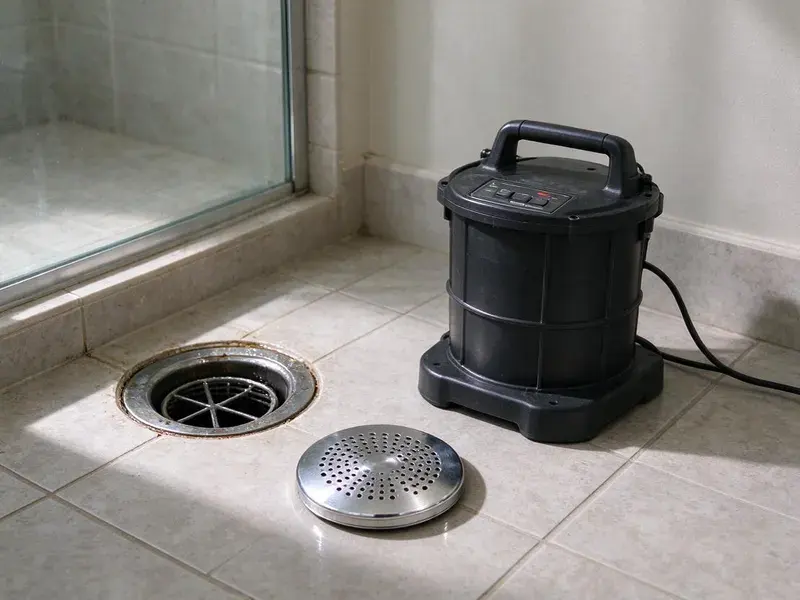
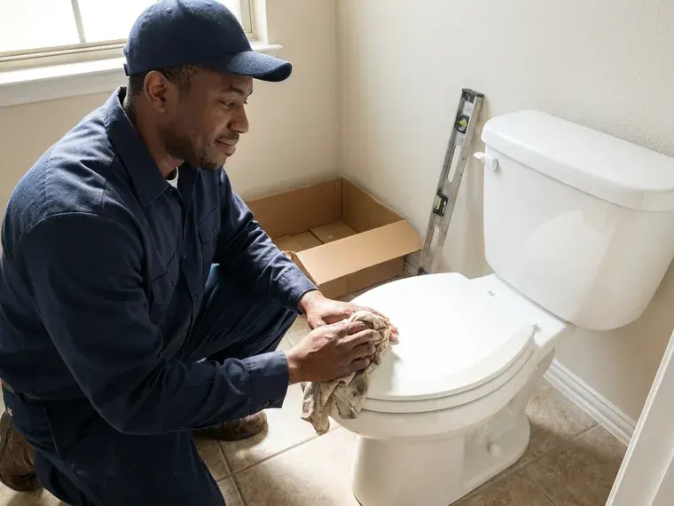

Drain Unblocking in Escondido, CA
When your drains are backed up in Escondido, CA, FKM Plumbing offers professional unblocking service you can count on.
- Clear Pricing
- Upfront Pricing
- Expert Local Plumbers
- Expert Local Plumbers
Need Your Drains Unblocked Fast in Escondido, CA?
Call now and a technician can be on the way with the tools to clear it.
Your Go-To for Drain Unblocking in Escondido, CA
FKM Plumbing provides comprehensive drain unblocking services throughout Escondido, CA, tackling clogs caused by grease buildup, tree roots, foreign objects, and more. Our trained technicians are equipped to clear any obstruction quickly, restoring full function to your plumbing system.
Our expertise includes:
- Locating whether the block is fixture, branch or main
- Expert Removal of Tree Root Intrusions
- Hydro jetting for stubborn blockages

Additional Drain Services Services in Escondido, CA
From stubborn kitchen clogs to main sewer backups, our drain services in Escondido, CA restore full flow fast and keep it that way.


Customers
Why Choose FKM Plumbing for Drain Unblocking in Escondido, CA?
Choosing FKM Plumbing means you're getting experienced plumbers who understand Southern California plumbing challenges. We use proven methods to keep your drains clear longer.
- Fast Arrival, We schedule unblocking calls quickly because a stopped drain cannot wait.
- Lasting Solutions, We focus on solving the problem fully, not just a temporary fix, so your drains stay clear longer.
- Local Expertise, Our plumbers understand the local soil conditions and water quality in Southern California that frequently contribute to drain blockages.
Citywide Coverage
From downtown Escondido to the farthest suburbs, our drain unblocking services cover the entire area. We are committed to providing dependable plumbing solutions to all residents and businesses in Escondido.
Experienced Team
The FKM Plumbing team brings years of experience to every drain unblocking job, for efficient and safe removal of even the most challenging obstructions. We pride ourselves on our careful approach and commitment to customer satisfaction.
Safety-First Approach
We avoid caustic chemicals that can burn skin and damage pipes. If chemicals were already used, we take extra care before working on the drain.
Trusted Certified Escondido Plumbing Services Professionals
At FKM Plumbing, we take pride in providing certified plumbing services throughout Escondido, CA. Backed by leading industry credentials, our experienced plumbers combine technical skill with genuine customer care. Whether it is repair, installation, or maintenance, we follow strict safety and quality standards to deliver long-lasting results you can trust.
Call Us Now PHCC Plumbing Contractor Recognition
PHCC Plumbing Contractor Recognition Better Business Bureau (BBB) Accreditation
Better Business Bureau (BBB) Accreditation Angi Certified Pro
Angi Certified Pro ISO 9001 Quality Management Certification
ISO 9001 Quality Management CertificationReliable Drain Unblocking Services in Escondido, CA
Kitchen Sink Drain Unblocking in Escondido
Kitchen sink drains are known for clogging due to grease, food particles, and soap scum buildup. Our specialized tools, including drain augers and bio-enzymatic cleaners, effectively cut through these blockages. We can also inspect for worn garbage disposal components that might be adding to frequent clogs, so your kitchen plumbing flows freely.

Preventative Drain Maintenance & Unblocking in Escondido, CA
Beyond emergency unblocking, FKM Plumbing offers preventative drain maintenance programs to keep your pipes clear and prevent future clogs. Regular inspections and scheduled drain cleaning can save you from costly repairs down the line. Hot inland summers push water heaters and outdoor plumbing hard, while coastal salt air can corrode exposed metal fittings. We can advise on best practices and schedule routine service for your Escondido, CA property.
Preventative Drain Maintenance in Escondido, CA
Beyond unblocking, FKM Plumbing offers preventative drain maintenance programs designed to keep your plumbing running smoothly and avoid future clogs. This includes regular inspections, enzyme treatments, and scheduled cleanings. Municipal water across much of Southern California is hard, leaving chalky scale on faucets, showerheads, and inside water heater tanks. Proactive maintenance helps keep that mineral buildup from turning into a blocked drain.
Bathroom Sink and Shower Drain Unblocking in Escondido, CA
Hair, soap scum, and toothpaste are common culprits for bathroom drain clogs. Our team uses drain augers and environmentally friendly enzyme cleaners to break down these materials without harming your pipes. We confirm complete removal of the blockage so your sinks and showers drain freely again, preventing standing water and potential overflows in your Escondido home.
Blocked Bathroom Sink Unblocking in Escondido, CA
Bathroom sinks block with hair, toothpaste and soap mixed with hard water minerals. We clean the pop-up stopper and P-trap first, which often solves the problem. If the blockage is in the wall, we run a small cable into the branch. Old or corroded traps can be replaced while we are there. We finish by testing the sink and checking for leaks.
Blocked Shower and Tub Drains in Escondido
Hair and soap scum are the main causes of blocked shower and tub drains. We remove the drain cover or stopper and pull the clog out by hand or with a small auger. For deeper blocks, we run a cable through the overflow opening. We check the drain assembly for loose parts that trap hair. Your shower drains properly before we go.
Toilet Drain Unblocking in Escondido
A clogged toilet can quickly become a major inconvenience. Our team handles all types of toilet blockages, from simple clogs to more complex issues involving foreign objects or deeper sewer line problems. We use professional-grade toilet augers to clear obstructions without damaging your toilet's porcelain, for a quick return to normal function.

Emergency Drain Unblocking Services in Escondido, CA
Drain emergencies don't wait for business hours. FKM Plumbing offers emergency drain unblocking for urgent situations like severe backups or overflowing fixtures. Our on-call team is available to address critical plumbing issues in Escondido, CA, minimizing water damage and restoring function when you need it most. Don't hesitate to call us immediately for fast help.
Drain Unblocking Near Me in Escondido, CA
A blocked drain needs a plumber who can get to you quickly. Our techs work across Escondido every day and keep their trucks stocked for any type of blockage. Most calls are resolved on the first visit.
Our local expertise means we know the common drain issues affecting properties in Escondido, CA, from aging infrastructure to local conditions. Choosing FKM Plumbing means you're getting a plumbing partner who really understands and serves the community, with solutions that last.
FKM Plumbing at a Glance
- Licensed and insured plumbers serving Escondido, CA
- 24/7 emergency service with same-day scheduling
- Upfront, flat-rate pricing before work begins
- 4.8-star rated by 754+ Southern California customers
Escondido Map
Escondido Information
- Population
- 148,122
- Area codes
- 760/442/858
- Service area
- Escondido and communities within 40 miles
- Nearby
- San Marcos, Vista, Carlsbad, Oceanside
Proper drain unblocking is essential for homes in Escondido, CA, where mineral buildup and shifting pipes can narrow drains over time. Municipal water across much of Southern California is hard, leaving chalky scale on faucets, showerheads, and inside water heater tanks.
Expert Services
Trust our professionals for reliable FKM Plumbing solutions in Escondido, CA.
Our Specialized Plumbing Services in Escondido, CA
At FKM Plumbing, we provide a complete range of plumbing services across Escondido, CA. From leak detection to full system installations, our team ensures fast, precise, and affordable service for both residential and commercial properties. Explore our core services below:


How Our Drain Unblocking Process Works in Escondido, CA
We follow a clear, step-by-step approach to diagnose and resolve your drain issues effectively.
Request a Quote
Call (213) 871-0701 and tell us which drain is blocked and what happened. We give you a price and send a tech promptly.
Locate the Blockage
Your tech checks connected fixtures to find where the blockage sits. Then they choose the correct tool to clear it.
Clear and Confirm
We remove the blockage and test the fixture with plenty of water. If needed, we explain how to prevent it happening again.
Frequently Asked Questions About Drain Unblocking in Escondido
The cost of drain unblocking in Escondido, CA can vary widely depending on the severity and location of the clog. Simple sink clogs might range from $150 to $300, while main sewer line blockages or those requiring hydro jetting could be $400 to $800 or more. We provide clear, upfront pricing after a thorough diagnosis.
Yes, we provide a written guarantee on every drain we unblock. If it blocks again under normal use during the coverage period, we come back.
If all your drains are backed up at once, it usually indicates a blockage in your main sewer line. In this situation, stop using all water fixtures immediately and contact FKM Plumbing for emergency service. A main line clog can cause serious water damage if not addressed quickly and professionally.
For drain unblocking, we primarily rely on professional-grade equipment from leading manufacturers such as RIDGID, Spartan Tool, and Gorlitz. These brands are known for their toughness and effectiveness on many types of clogs and pipe materials.
Yes, FKM Plumbing stands behind our work. We offer a satisfaction guarantee and specific warranties on our drain unblocking services. Details come with your service agreement, so you have peace of mind.
For routine drain unblocking or simple repairs, a permit is typically not required. However, if the work involves major changes to your plumbing system, such as replacing a section of your main sewer line, a permit from Escondido would likely be necessary. We handle all necessary permits when applicable.
Typically, simple drain unblocking services, such as clearing a clog in a sink or shower, do not require permits in Escondido, CA. However, if the unblocking leads to a more extensive repair or replacement of a sewer line, a permit from the local building department would probably be necessary. We handle all permit requirements if needed.
Common reasons include a low-flow toilet with a narrow trapway, a partial blockage in the line or a venting issue. We can pinpoint the cause.
What People Are Saying About Our Plumbing Experts?

Sofia M.
Two new toilets installed in one visit, no mess left behind, and the tech even adjusted a faucet he noticed was dripping. Fair pricing and really friendly.
Toilet Installation · San Diego, CA
Emily R.
I called FKM Plumbing for plumbing repair, and the technician was fast, polite, and thorough. They explained the problem clearly and fixed it the same day. I will definitely hire them again. Highly recommended!
Plumbing Repair · Escondido, CA
Robert G.
The trenchless sewer replacement saved our front yard. They walked us through the camera inspection footage first so we knew exactly what we were paying for.
Sewer Line Replacement · Oceanside, CA
Patricia H.
We had a slab leak that two other companies could not find. FKM Plumbing located it in under an hour, explained our options, and the price matched the quote to the dollar.
Slab Leak Repair · El Cajon, CA
Daniel K.
A pipe burst at 11 pm and they actually answered. The plumber showed up within the hour, shut everything down, and had us back to normal the next morning. Could not ask for more.
Emergency Plumbing · Escondido, CALaura S.
I scheduled a water heater replacement, and the team made the process smooth and affordable. The new unit works perfectly, and they cleaned up after completing the job.
Water Heater Replacement · Vista, CA